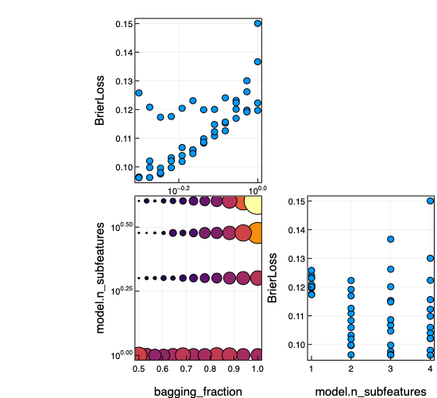
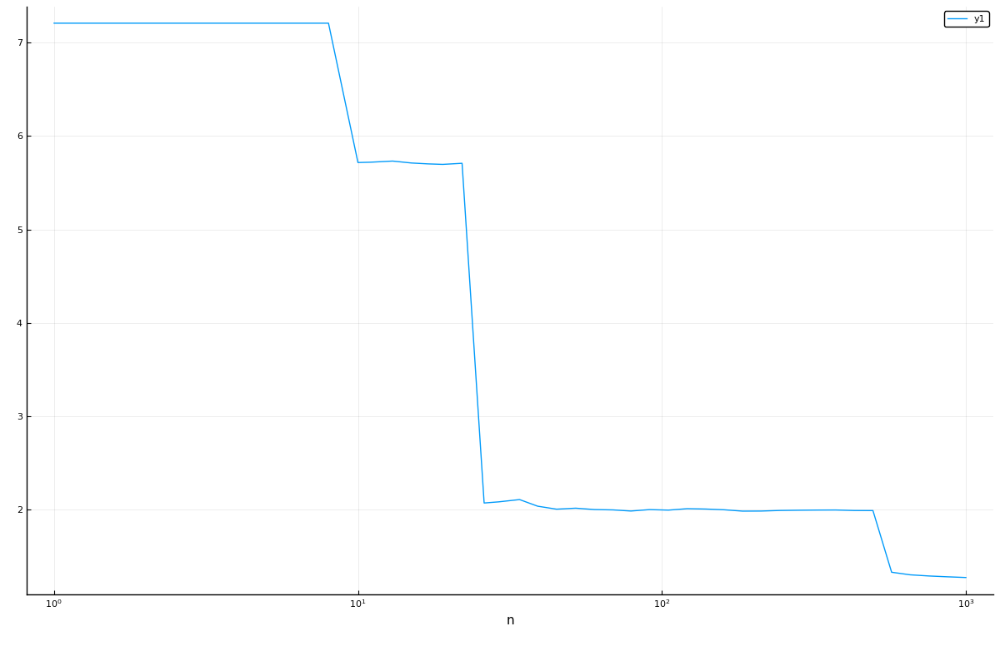
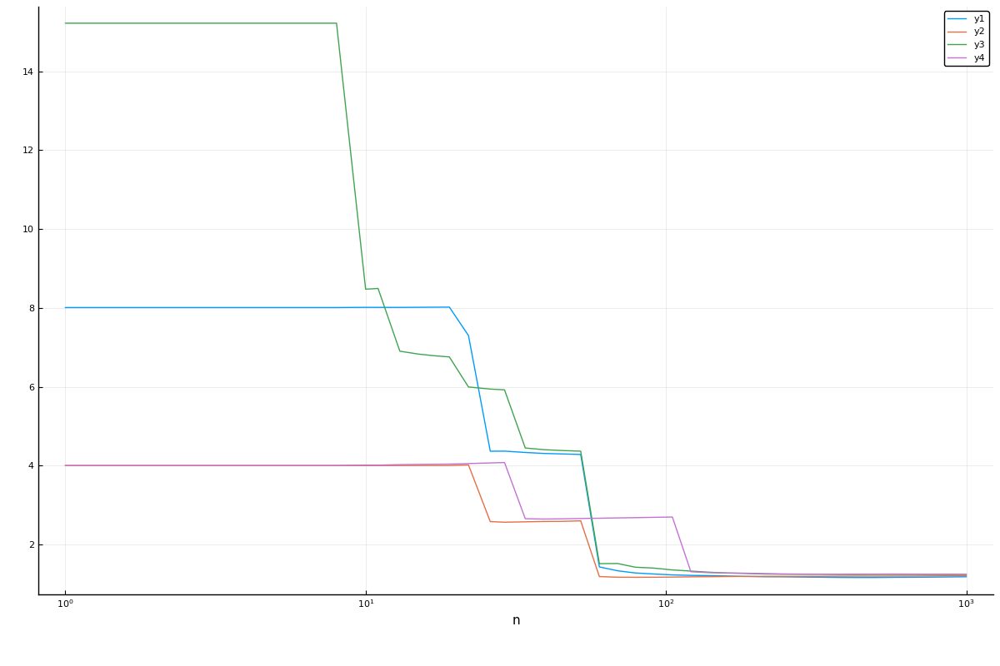

Common MLJ Workflows
Data ingestion
import RDatasets
channing = RDatasets.dataset("boot", "channing")
julia> first(channing, 4)
4×5 DataFrame
Row │ Sex Entry Exit Time Cens
│ Cat… Int32 Int32 Int32 Int32
─────┼──────────────────────────────────
1 │ Male 782 909 127 1
2 │ Male 1020 1128 108 1
3 │ Male 856 969 113 1
4 │ Male 915 957 42 1Inspecting metadata, including column scientific types:
schema(channing)┌───────┬───────────────┬──────────────────────────────────┐
│ names │ scitypes │ types │
├───────┼───────────────┼──────────────────────────────────┤
│ Sex │ Multiclass{2} │ CategoricalValue{String, UInt32} │
│ Entry │ Count │ Int64 │
│ Exit │ Count │ Int64 │
│ Time │ Count │ Int64 │
│ Cens │ Count │ Int64 │
└───────┴───────────────┴──────────────────────────────────┘
Horizontally splitting data and shuffling rows.
Here y is the :Exit column and X everything else:
y, X = unpack(channing, ==(:Exit), rng=123);Here y is the :Exit column and X everything else except :Time:
y, X = unpack(channing,
==(:Exit),
!=(:Time);
rng=123);
scitype(y)AbstractVector{Count} (alias for AbstractArray{Count, 1})schema(X)┌───────┬───────────────┬──────────────────────────────────┐
│ names │ scitypes │ types │
├───────┼───────────────┼──────────────────────────────────┤
│ Sex │ Multiclass{2} │ CategoricalValue{String, UInt32} │
│ Entry │ Count │ Int64 │
│ Cens │ Count │ Int64 │
└───────┴───────────────┴──────────────────────────────────┘
Fixing wrong scientific types in X:
X = coerce(X, :Exit=>Continuous, :Entry=>Continuous, :Cens=>Multiclass)
schema(X)┌───────┬─────────────────┬──────────────────────────────────┐
│ names │ scitypes │ types │
├───────┼─────────────────┼──────────────────────────────────┤
│ Sex │ Multiclass{2} │ CategoricalValue{String, UInt32} │
│ Entry │ Continuous │ Float64 │
│ Cens │ Multiclass{462} │ CategoricalValue{Int64, UInt32} │
└───────┴─────────────────┴──────────────────────────────────┘
Loading a built-in supervised dataset:
table = load_iris();
schema(table)┌──────────────┬───────────────┬──────────────────────────────────┐
│ names │ scitypes │ types │
├──────────────┼───────────────┼──────────────────────────────────┤
│ sepal_length │ Continuous │ Float64 │
│ sepal_width │ Continuous │ Float64 │
│ petal_length │ Continuous │ Float64 │
│ petal_width │ Continuous │ Float64 │
│ target │ Multiclass{3} │ CategoricalValue{String, UInt32} │
└──────────────┴───────────────┴──────────────────────────────────┘
Loading a built-in data set already split into X and y:
X, y = @load_iris;
selectrows(X, 1:4) # selectrows works whenever `Tables.istable(X)==true`.(sepal_length = [5.1, 4.9, 4.7, 4.6], sepal_width = [3.5, 3.0, 3.2, 3.1], petal_length = [1.4, 1.4, 1.3, 1.5], petal_width = [0.2, 0.2, 0.2, 0.2],)
y[1:4]4-element CategoricalArray{String,1,UInt32}:
"setosa"
"setosa"
"setosa"
"setosa"Splitting data vertically after row shuffling:
channing_train, channing_test = partition(channing, 0.6, rng=123);Or, if already horizontally split:
(Xtrain, Xtest), (ytrain, ytest) = partition((X, y), 0.6, multi=true, rng=123)(((sepal_length = [6.7, 5.7, 7.2, 4.4, 5.6, 6.5, 4.4, 6.1, 5.4, 4.9 … 6.4, 5.5, 5.4, 4.8, 6.5, 4.9, 6.5, 6.7, 5.6, 6.4], sepal_width = [3.3, 2.8, 3.0, 2.9, 2.5, 3.0, 3.0, 2.9, 3.9, 2.5 … 3.1, 2.3, 3.7, 3.1, 3.0, 2.4, 2.8, 3.3, 2.9, 2.8], petal_length = [5.7, 4.1, 5.8, 1.4, 3.9, 5.2, 1.3, 4.7, 1.7, 4.5 … 5.5, 4.0, 1.5, 1.6, 5.5, 3.3, 4.6, 5.7, 3.6, 5.6], petal_width = [2.1, 1.3, 1.6, 0.2, 1.1, 2.0, 0.2, 1.4, 0.4, 1.7 … 1.8, 1.3, 0.2, 0.2, 1.8, 1.0, 1.5, 2.5, 1.3, 2.2]), (sepal_length = [6.0, 5.8, 6.7, 5.1, 5.0, 6.3, 5.7, 6.4, 6.1, 5.0 … 6.4, 6.8, 6.9, 6.1, 6.7, 5.0, 7.6, 6.3, 5.1, 5.0], sepal_width = [2.7, 2.6, 3.0, 3.8, 3.4, 2.8, 2.5, 3.2, 2.8, 3.5 … 2.7, 3.2, 3.1, 2.8, 2.5, 3.5, 3.0, 2.5, 3.8, 3.6], petal_length = [5.1, 4.0, 5.2, 1.9, 1.5, 5.1, 5.0, 4.5, 4.7, 1.6 … 5.3, 5.9, 5.4, 4.0, 5.8, 1.3, 6.6, 5.0, 1.6, 1.4], petal_width = [1.6, 1.2, 2.3, 0.4, 0.2, 1.5, 2.0, 1.5, 1.2, 0.6 … 1.9, 2.3, 2.1, 1.3, 1.8, 0.3, 2.1, 1.9, 0.2, 0.2])), (CategoricalValue{String, UInt32}["virginica", "versicolor", "virginica", "setosa", "versicolor", "virginica", "setosa", "versicolor", "setosa", "virginica" … "virginica", "versicolor", "setosa", "setosa", "virginica", "versicolor", "versicolor", "virginica", "versicolor", "virginica"], CategoricalValue{String, UInt32}["versicolor", "versicolor", "virginica", "setosa", "setosa", "virginica", "virginica", "versicolor", "versicolor", "setosa" … "virginica", "virginica", "virginica", "versicolor", "virginica", "setosa", "virginica", "virginica", "setosa", "setosa"]))Model Search
Reference: Model Search
Searching for a supervised model:
X, y = @load_boston
ms = models(matching(X, y))64-element Vector{NamedTuple{(:name, :package_name, :is_supervised, :abstract_type, :deep_properties, :docstring, :fit_data_scitype, :human_name, :hyperparameter_ranges, :hyperparameter_types, :hyperparameters, :implemented_methods, :inverse_transform_scitype, :is_pure_julia, :is_wrapper, :iteration_parameter, :load_path, :package_license, :package_url, :package_uuid, :predict_scitype, :prediction_type, :reporting_operations, :reports_feature_importances, :supports_class_weights, :supports_online, :supports_training_losses, :supports_weights, :transform_scitype, :input_scitype, :target_scitype, :output_scitype)}}:
(name = ARDRegressor, package_name = ScikitLearn, ... )
(name = AdaBoostRegressor, package_name = ScikitLearn, ... )
(name = BaggingRegressor, package_name = ScikitLearn, ... )
(name = BayesianRidgeRegressor, package_name = ScikitLearn, ... )
(name = ConstantRegressor, package_name = MLJModels, ... )
(name = DecisionTreeRegressor, package_name = BetaML, ... )
(name = DecisionTreeRegressor, package_name = DecisionTree, ... )
(name = DeterministicConstantRegressor, package_name = MLJModels, ... )
(name = DummyRegressor, package_name = ScikitLearn, ... )
(name = ElasticNetCVRegressor, package_name = ScikitLearn, ... )
⋮
(name = RidgeRegressor, package_name = MultivariateStats, ... )
(name = RidgeRegressor, package_name = ScikitLearn, ... )
(name = RobustRegressor, package_name = MLJLinearModels, ... )
(name = SGDRegressor, package_name = ScikitLearn, ... )
(name = SVMLinearRegressor, package_name = ScikitLearn, ... )
(name = SVMNuRegressor, package_name = ScikitLearn, ... )
(name = SVMRegressor, package_name = ScikitLearn, ... )
(name = TheilSenRegressor, package_name = ScikitLearn, ... )
(name = XGBoostRegressor, package_name = XGBoost, ... )ms[6](name = "DecisionTreeRegressor",
package_name = "BetaML",
is_supervised = true,
abstract_type = Deterministic,
deep_properties = (),
docstring = "```julia\nmutable struct DecisionTreeRegressor <: M...",
fit_data_scitype =
Tuple{Table{<:AbstractVector{<:Union{Missing, Known}}}, AbstractVector{<:Continuous}},
human_name = "decision tree regressor",
hyperparameter_ranges =
(nothing, nothing, nothing, nothing, nothing, nothing),
hyperparameter_types =
("Int64", "Float64", "Int64", "Int64", "Function", "Random.AbstractRNG"),
hyperparameters = (:max_depth,
:min_gain,
:min_records,
:max_features,
:splitting_criterion,
:rng),
implemented_methods = [:fit, :predict],
inverse_transform_scitype = Unknown,
is_pure_julia = true,
is_wrapper = false,
iteration_parameter = nothing,
load_path = "BetaML.Trees.DecisionTreeRegressor",
package_license = "MIT",
package_url = "https://github.com/sylvaticus/BetaML.jl",
package_uuid = "024491cd-cc6b-443e-8034-08ea7eb7db2b",
predict_scitype = AbstractVector{<:Continuous},
prediction_type = :deterministic,
reporting_operations = (),
reports_feature_importances = false,
supports_class_weights = false,
supports_online = false,
supports_training_losses = false,
supports_weights = false,
transform_scitype = Unknown,
input_scitype = Table{<:AbstractVector{<:Union{Missing, Known}}},
target_scitype = AbstractVector{<:Continuous},
output_scitype = Unknown)models("Tree");23-element Vector{NamedTuple{(:name, :package_name, :is_supervised, :abstract_type, :deep_properties, :docstring, :fit_data_scitype, :human_name, :hyperparameter_ranges, :hyperparameter_types, :hyperparameters, :implemented_methods, :inverse_transform_scitype, :is_pure_julia, :is_wrapper, :iteration_parameter, :load_path, :package_license, :package_url, :package_uuid, :predict_scitype, :prediction_type, :reporting_operations, :reports_feature_importances, :supports_class_weights, :supports_online, :supports_training_losses, :supports_weights, :transform_scitype, :input_scitype, :target_scitype, :output_scitype)}}:
(name = ABODDetector, package_name = OutlierDetectionNeighbors, ... )
(name = AdaBoostStumpClassifier, package_name = DecisionTree, ... )
(name = COFDetector, package_name = OutlierDetectionNeighbors, ... )
(name = DNNDetector, package_name = OutlierDetectionNeighbors, ... )
(name = DecisionTreeClassifier, package_name = BetaML, ... )
(name = DecisionTreeClassifier, package_name = DecisionTree, ... )
(name = DecisionTreeRegressor, package_name = BetaML, ... )
(name = DecisionTreeRegressor, package_name = DecisionTree, ... )
(name = EvoTreeClassifier, package_name = EvoTrees, ... )
(name = EvoTreeCount, package_name = EvoTrees, ... )
⋮
(name = ExtraTreesRegressor, package_name = ScikitLearn, ... )
(name = GeneralImputer, package_name = BetaML, ... )
(name = KNNDetector, package_name = OutlierDetectionNeighbors, ... )
(name = LOFDetector, package_name = OutlierDetectionNeighbors, ... )
(name = OneRuleClassifier, package_name = OneRule, ... )
(name = RandomForestClassifier, package_name = BetaML, ... )
(name = RandomForestClassifier, package_name = DecisionTree, ... )
(name = RandomForestRegressor, package_name = BetaML, ... )
(name = RandomForestRegressor, package_name = DecisionTree, ... )A more refined search:
models() do model
matching(model, X, y) &&
model.prediction_type == :deterministic &&
model.is_pure_julia
end;Searching for an unsupervised model:
models(matching(X))58-element Vector{NamedTuple{(:name, :package_name, :is_supervised, :abstract_type, :deep_properties, :docstring, :fit_data_scitype, :human_name, :hyperparameter_ranges, :hyperparameter_types, :hyperparameters, :implemented_methods, :inverse_transform_scitype, :is_pure_julia, :is_wrapper, :iteration_parameter, :load_path, :package_license, :package_url, :package_uuid, :predict_scitype, :prediction_type, :reporting_operations, :reports_feature_importances, :supports_class_weights, :supports_online, :supports_training_losses, :supports_weights, :transform_scitype, :input_scitype, :target_scitype, :output_scitype)}}:
(name = ABODDetector, package_name = OutlierDetectionNeighbors, ... )
(name = ABODDetector, package_name = OutlierDetectionPython, ... )
(name = AEDetector, package_name = OutlierDetectionNetworks, ... )
(name = AffinityPropagation, package_name = ScikitLearn, ... )
(name = AgglomerativeClustering, package_name = ScikitLearn, ... )
(name = Birch, package_name = ScikitLearn, ... )
(name = CBLOFDetector, package_name = OutlierDetectionPython, ... )
(name = COFDetector, package_name = OutlierDetectionNeighbors, ... )
(name = COFDetector, package_name = OutlierDetectionPython, ... )
(name = COPODDetector, package_name = OutlierDetectionPython, ... )
⋮
(name = PPCA, package_name = MultivariateStats, ... )
(name = RODDetector, package_name = OutlierDetectionPython, ... )
(name = RandomForestImputer, package_name = BetaML, ... )
(name = SODDetector, package_name = OutlierDetectionPython, ... )
(name = SOSDetector, package_name = OutlierDetectionPython, ... )
(name = SimpleImputer, package_name = BetaML, ... )
(name = SpectralClustering, package_name = ScikitLearn, ... )
(name = Standardizer, package_name = MLJModels, ... )
(name = TSVDTransformer, package_name = TSVD, ... )Getting the metadata entry for a given model type:
info("PCA")
info("RidgeRegressor", pkg="MultivariateStats") # a model type in multiple packages(name = "RidgeRegressor",
package_name = "MultivariateStats",
is_supervised = true,
abstract_type = Deterministic,
deep_properties = (),
docstring = "```\nRidgeRegressor\n```\n\nA model type for construct...",
fit_data_scitype =
Tuple{Table{<:AbstractVector{<:Continuous}}, AbstractVector{Continuous}},
human_name = "ridge regressor",
hyperparameter_ranges = (nothing, nothing),
hyperparameter_types = ("Union{Real, AbstractVecOrMat}", "Bool"),
hyperparameters = (:lambda, :bias),
implemented_methods = [:clean!, :fit, :fitted_params, :predict],
inverse_transform_scitype = Unknown,
is_pure_julia = true,
is_wrapper = false,
iteration_parameter = nothing,
load_path = "MLJMultivariateStatsInterface.RidgeRegressor",
package_license = "MIT",
package_url = "https://github.com/JuliaStats/MultivariateStats.jl",
package_uuid = "6f286f6a-111f-5878-ab1e-185364afe411",
predict_scitype = AbstractVector{Continuous},
prediction_type = :deterministic,
reporting_operations = (),
reports_feature_importances = false,
supports_class_weights = false,
supports_online = false,
supports_training_losses = false,
supports_weights = false,
transform_scitype = Unknown,
input_scitype = Table{<:AbstractVector{<:Continuous}},
target_scitype = AbstractVector{Continuous},
output_scitype = Unknown)Extracting the model document string:
doc("DecisionTreeClassifier", pkg="DecisionTree")DecisionTreeClassifierA model type for constructing a CART decision tree classifier, based on DecisionTree.jl, and implementing the MLJ model interface.
From MLJ, the type can be imported using
DecisionTreeClassifier = @load DecisionTreeClassifier pkg=DecisionTreeDo model = DecisionTreeClassifier() to construct an instance with default hyper-parameters. Provide keyword arguments to override hyper-parameter defaults, as in DecisionTreeClassifier(max_depth=...).
DecisionTreeClassifier implements the CART algorithm, originally published in Breiman, Leo; Friedman, J. H.; Olshen, R. A.; Stone, C. J. (1984): "Classification and regression trees". Monterey, CA: Wadsworth & Brooks/Cole Advanced Books & Software..
Training data
In MLJ or MLJBase, bind an instance model to data with
mach = machine(model, X, y)where
X: any table of input features (eg, aDataFrame) whose columns each have one of the following element scitypes:Continuous,Count, or<:OrderedFactor; check column scitypes withschema(X)y: is the target, which can be anyAbstractVectorwhose element scitype is<:OrderedFactoror<:Multiclass; check the scitype withscitype(y)
Train the machine using fit!(mach, rows=...).
Hyper-parameters
max_depth=-1: max depth of the decision tree (-1=any)min_samples_leaf=1: max number of samples each leaf needs to havemin_samples_split=2: min number of samples needed for a splitmin_purity_increase=0: min purity needed for a splitn_subfeatures=0: number of features to select at random (0 for all, -1 for square root of number of features)post_prune=false: set totruefor post-fit pruningmerge_purity_threshold=1.0: (post-pruning) merge leaves having combined purity>= merge_purity_thresholddisplay_depth=5: max depth to show when displaying the treefeature_importance: method to use for computing feature importances. One of(:impurity, :split)rng=Random.GLOBAL_RNG: random number generator or seed
Operations
predict(mach, Xnew): return predictions of the target given featuresXnewhaving the same scitype asXabove. Predictions are probabilistic, but uncalibrated.predict_mode(mach, Xnew): instead return the mode of each prediction above.
Fitted parameters
The fields of fitted_params(mach) are:
tree: the tree or stump object returned by the core DecisionTree.jl algorithmencoding: dictionary of target classes keyed on integers used internally by DecisionTree.jl; needed to interpret pretty printing of tree (obtained by callingfit!(mach, verbosity=2)or from report - see below)features: the names of the features encountered in training, in an order consistent with the output ofprint_tree(see below)
Report
The fields of report(mach) are:
classes_seen: list of target classes actually observed in trainingprint_tree: method to print a pretty representation of the fitted tree, with single argument the tree depth; interpretation requires internal integer-class encoding (see "Fitted parameters" above).features: the names of the features encountered in training, in an order consistent with the output ofprint_tree(see below)
Examples
using MLJ
Tree = @load DecisionTreeClassifier pkg=DecisionTree
tree = Tree(max_depth=4, min_samples_split=3)
X, y = @load_iris
mach = machine(tree, X, y) |> fit!
Xnew = (sepal_length = [6.4, 7.2, 7.4],
sepal_width = [2.8, 3.0, 2.8],
petal_length = [5.6, 5.8, 6.1],
petal_width = [2.1, 1.6, 1.9],)
yhat = predict(mach, Xnew) # probabilistic predictions
predict_mode(mach, Xnew) # point predictions
pdf.(yhat, "virginica") # probabilities for the "verginica" class
fitted_params(mach).tree # raw tree or stump object from DecisionTrees.jl
julia> report(mach).print_tree(3)
Feature 4, Threshold 0.8
L-> 1 : 50/50
R-> Feature 4, Threshold 1.75
L-> Feature 3, Threshold 4.95
L->
R->
R-> Feature 3, Threshold 4.85
L->
R-> 3 : 43/43To interpret the internal class labelling:
julia> fitted_params(mach).encoding
Dict{CategoricalArrays.CategoricalValue{String, UInt32}, UInt32} with 3 entries:
"virginica" => 0x00000003
"setosa" => 0x00000001
"versicolor" => 0x00000002See also DecisionTree.jl and the unwrapped model type MLJDecisionTreeInterface.DecisionTree.DecisionTreeClassifier.
Instantiating a model
Reference: Getting Started, Loading Model Code
Tree = @load DecisionTreeClassifier pkg=DecisionTree
tree = Tree(min_samples_split=5, max_depth=4)DecisionTreeClassifier( max_depth = 4, min_samples_leaf = 1, min_samples_split = 5, min_purity_increase = 0.0, n_subfeatures = 0, post_prune = false, merge_purity_threshold = 1.0, display_depth = 5, feature_importance = :impurity, rng = Random._GLOBAL_RNG())
or
tree = (@load DecisionTreeClassifier)()
tree.min_samples_split = 5
tree.max_depth = 4Evaluating a model
Reference: Evaluating Model Performance
X, y = @load_boston
KNN = @load KNNRegressor
knn = KNN()
evaluate(knn, X, y,
resampling=CV(nfolds=5),
measure=[RootMeanSquaredError(), MeanAbsoluteError()])PerformanceEvaluation object with these fields:
measure, operation, measurement, per_fold,
per_observation, fitted_params_per_fold,
report_per_fold, train_test_rows
Extract:
┌────────────────────────┬───────────┬─────────────┬─────────┬──────────────────
│ measure │ operation │ measurement │ 1.96*SE │ per_fold ⋯
├────────────────────────┼───────────┼─────────────┼─────────┼──────────────────
│ RootMeanSquaredError() │ predict │ 8.77 │ 1.84 │ [8.53, 8.8, 10. ⋯
│ MeanAbsoluteError() │ predict │ 6.02 │ 1.26 │ [6.52, 5.7, 7.6 ⋯
└────────────────────────┴───────────┴─────────────┴─────────┴──────────────────
1 column omitted
Note RootMeanSquaredError() has alias rms and MeanAbsoluteError() has alias mae.
Do measures() to list all losses and scores and their aliases.
Basic fit/evaluate/predict by hand:
Reference: Getting Started, Machines, Evaluating Model Performance, Performance Measures
crabs = load_crabs() |> DataFrames.DataFrame
schema(crabs)┌───────┬───────────────┬──────────────────────────────────┐
│ names │ scitypes │ types │
├───────┼───────────────┼──────────────────────────────────┤
│ sp │ Multiclass{2} │ CategoricalValue{String, UInt32} │
│ sex │ Multiclass{2} │ CategoricalValue{String, UInt32} │
│ index │ Count │ Int64 │
│ FL │ Continuous │ Float64 │
│ RW │ Continuous │ Float64 │
│ CL │ Continuous │ Float64 │
│ CW │ Continuous │ Float64 │
│ BD │ Continuous │ Float64 │
└───────┴───────────────┴──────────────────────────────────┘
y, X = unpack(crabs, ==(:sp), !in([:index, :sex]); rng=123)
Tree = @load DecisionTreeClassifier pkg=DecisionTreeDecisionTreeClassifier( max_depth = 2, min_samples_leaf = 1, min_samples_split = 2, min_purity_increase = 0.0, n_subfeatures = 0, post_prune = false, merge_purity_threshold = 1.0, display_depth = 5, feature_importance = :impurity, rng = Random._GLOBAL_RNG())
Bind the model and data together in a machine, which will additionally, store the learned parameters (fitresults) when fit:
mach = machine(tree, X, y)untrained Machine; caches model-specific representations of data
model: DecisionTreeClassifier(max_depth = 2, …)
args:
1: Source @017 ⏎ Table{AbstractVector{Continuous}}
2: Source @553 ⏎ AbstractVector{Multiclass{2}}
Split row indices into training and evaluation rows:
train, test = partition(eachindex(y), 0.7); # 70:30 split([1, 2, 3, 4, 5, 6, 7, 8, 9, 10 … 131, 132, 133, 134, 135, 136, 137, 138, 139, 140], [141, 142, 143, 144, 145, 146, 147, 148, 149, 150 … 191, 192, 193, 194, 195, 196, 197, 198, 199, 200])
Fit on the train data set and evaluate on the test data set:
fit!(mach, rows=train)
yhat = predict(mach, X[test,:])
mean(LogLoss(tol=1e-4)(yhat, y[test]))1.0788055664326648
Note LogLoss() has aliases log_loss and cross_entropy.
Run measures() to list all losses and scores and their aliases ("instances").
Predict on the new data set:
Xnew = (FL = rand(3), RW = rand(3), CL = rand(3), CW = rand(3), BD =rand(3))
predict(mach, Xnew) # a vector of distributions3-element CategoricalDistributions.UnivariateFiniteVector{Multiclass{2}, String, UInt32, Float64}:
UnivariateFinite{Multiclass{2}}(B=>0.667, O=>0.333)
UnivariateFinite{Multiclass{2}}(B=>0.667, O=>0.333)
UnivariateFinite{Multiclass{2}}(B=>0.667, O=>0.333)predict_mode(mach, Xnew) # a vector of point-predictions3-element CategoricalArray{String,1,UInt32}:
"B"
"B"
"B"More performance evaluation examples
Evaluating model + data directly:
evaluate(tree, X, y,
resampling=Holdout(fraction_train=0.7, shuffle=true, rng=1234),
measure=[LogLoss(), Accuracy()])PerformanceEvaluation object with these fields: measure, operation, measurement, per_fold, per_observation, fitted_params_per_fold, report_per_fold, train_test_rows Extract: ┌────────────────────────────────┬──────────────┬─────────────┬──────────┐ │ measure │ operation │ measurement │ per_fold │ ├────────────────────────────────┼──────────────┼─────────────┼──────────┤ │ LogLoss( │ predict │ 1.12 │ [1.12] │ │ tol = 2.220446049250313e-16) │ │ │ │ │ Accuracy() │ predict_mode │ 0.683 │ [0.683] │ └────────────────────────────────┴──────────────┴─────────────┴──────────┘
If a machine is already defined, as above:
evaluate!(mach,
resampling=Holdout(fraction_train=0.7, shuffle=true, rng=1234),
measure=[LogLoss(), Accuracy()])PerformanceEvaluation object with these fields: measure, operation, measurement, per_fold, per_observation, fitted_params_per_fold, report_per_fold, train_test_rows Extract: ┌────────────────────────────────┬──────────────┬─────────────┬──────────┐ │ measure │ operation │ measurement │ per_fold │ ├────────────────────────────────┼──────────────┼─────────────┼──────────┤ │ LogLoss( │ predict │ 1.12 │ [1.12] │ │ tol = 2.220446049250313e-16) │ │ │ │ │ Accuracy() │ predict_mode │ 0.683 │ [0.683] │ └────────────────────────────────┴──────────────┴─────────────┴──────────┘
Using cross-validation:
evaluate!(mach, resampling=CV(nfolds=5, shuffle=true, rng=1234),
measure=[LogLoss(), Accuracy()])PerformanceEvaluation object with these fields:
measure, operation, measurement, per_fold,
per_observation, fitted_params_per_fold,
report_per_fold, train_test_rows
Extract:
┌────────────────────────────────┬──────────────┬─────────────┬─────────┬───────
│ measure │ operation │ measurement │ 1.96*SE │ per_ ⋯
├────────────────────────────────┼──────────────┼─────────────┼─────────┼───────
│ LogLoss( │ predict │ 0.748 │ 0.432 │ [0.5 ⋯
│ tol = 2.220446049250313e-16) │ │ │ │ ⋯
│ Accuracy() │ predict_mode │ 0.7 │ N/A │ [0.7 ⋯
└────────────────────────────────┴──────────────┴─────────────┴─────────┴───────
1 column omitted
With user-specified train/test pairs of row indices:
f1, f2, f3 = 1:13, 14:26, 27:36
pairs = [(f1, vcat(f2, f3)), (f2, vcat(f3, f1)), (f3, vcat(f1, f2))];
evaluate!(mach,
resampling=pairs,
measure=[LogLoss(), Accuracy()])PerformanceEvaluation object with these fields:
measure, operation, measurement, per_fold,
per_observation, fitted_params_per_fold,
report_per_fold, train_test_rows
Extract:
┌────────────────────────────────┬──────────────┬─────────────┬─────────┬───────
│ measure │ operation │ measurement │ 1.96*SE │ per_ ⋯
├────────────────────────────────┼──────────────┼─────────────┼─────────┼───────
│ LogLoss( │ predict │ 4.29 │ 1.2 │ [5.1 ⋯
│ tol = 2.220446049250313e-16) │ │ │ │ ⋯
│ Accuracy() │ predict_mode │ 0.735 │ N/A │ [0.6 ⋯
└────────────────────────────────┴──────────────┴─────────────┴─────────┴───────
1 column omitted
Changing a hyperparameter and re-evaluating:
tree.max_depth = 3
evaluate!(mach,
resampling=CV(nfolds=5, shuffle=true, rng=1234),
measure=[LogLoss(), Accuracy()])PerformanceEvaluation object with these fields:
measure, operation, measurement, per_fold,
per_observation, fitted_params_per_fold,
report_per_fold, train_test_rows
Extract:
┌────────────────────────────────┬──────────────┬─────────────┬─────────┬───────
│ measure │ operation │ measurement │ 1.96*SE │ per_ ⋯
├────────────────────────────────┼──────────────┼─────────────┼─────────┼───────
│ LogLoss( │ predict │ 1.19 │ 0.957 │ [1.2 ⋯
│ tol = 2.220446049250313e-16) │ │ │ │ ⋯
│ Accuracy() │ predict_mode │ 0.865 │ N/A │ [0.8 ⋯
└────────────────────────────────┴──────────────┴─────────────┴─────────┴───────
1 column omitted
Inspecting training results
Fit an ordinary least square model to some synthetic data:
x1 = rand(100)
x2 = rand(100)
X = (x1=x1, x2=x2)
y = x1 - 2x2 + 0.1*rand(100);
OLS = @load LinearRegressor pkg=GLM
ols = OLS()
mach = machine(ols, X, y) |> fit!trained Machine; caches model-specific representations of data
model: LinearRegressor(fit_intercept = true, …)
args:
1: Source @647 ⏎ Table{AbstractVector{Continuous}}
2: Source @308 ⏎ AbstractVector{Continuous}
Get a named tuple representing the learned parameters, human-readable if appropriate:
fitted_params(mach)(features = [:x1, :x2], coef = [0.9948315668939126, -1.9876263707505355], intercept = 0.04676365274932123,)
Get other training-related information:
report(mach)(stderror = [0.011166224252537825, 0.010661184657751186, 0.0081656666475905],
dof_residual = 97.0,
vcov = [0.0001246845640579639 6.279991158614648e-6 -6.117871985740058e-5; 6.279991158614648e-6 0.00011366085830666926 -5.897714657487264e-5; -6.117871985740058e-5 -5.897714657487264e-5 6.66781117995719e-5],
deviance = 0.08821894793739475,
coef_table = ──────────────────────────────────────────────────────────────────────────────
Coef. Std. Error t Pr(>|t|) Lower 95% Upper 95%
──────────────────────────────────────────────────────────────────────────────
x1 0.994832 0.0111662 89.09 <1e-94 0.97267 1.01699
x2 -1.98763 0.0106612 -186.44 <1e-99 -2.00879 -1.96647
(Intercept) 0.0467637 0.00816567 5.73 <1e-06 0.0305571 0.0629702
──────────────────────────────────────────────────────────────────────────────,)Basic fit/transform for unsupervised models
Load data:
X, y = @load_iris
train, test = partition(eachindex(y), 0.97, shuffle=true, rng=123)([125, 100, 130, 9, 70, 148, 39, 64, 6, 107 … 110, 59, 139, 21, 112, 144, 140, 72, 109, 41], [106, 147, 47, 5])
Instantiate and fit the model/machine:
PCA = @load PCA
pca = PCA(maxoutdim=2)
mach = machine(pca, X)
fit!(mach, rows=train)trained Machine; caches model-specific representations of data
model: PCA(maxoutdim = 2, …)
args:
1: Source @153 ⏎ Table{AbstractVector{Continuous}}
Transform selected data bound to the machine:
transform(mach, rows=test);(x1 = [-3.394282685448322, -1.5219827578765053, 2.53824745518522, 2.7299639893931382], x2 = [0.5472450223745221, -0.36842368617126425, 0.5199299511335685, 0.34484661222323487],)
Transform new data:
Xnew = (sepal_length=rand(3), sepal_width=rand(3),
petal_length=rand(3), petal_width=rand(3));
transform(mach, Xnew)(x1 = [4.900759076996099, 4.435319393066913, 5.039998080266189], x2 = [-4.423917617356438, -4.789820383256204, -4.727334115761451],)
Inverting learned transformations
y = rand(100);
stand = Standardizer()
mach = machine(stand, y)
fit!(mach)
z = transform(mach, y);
@assert inverse_transform(mach, z) ≈ y # true[ Info: Training machine(Standardizer(features = Symbol[], …), …).
Nested hyperparameter tuning
Reference: Tuning Models
Define a model with nested hyperparameters:
Tree = @load DecisionTreeClassifier pkg=DecisionTree
tree = Tree()
forest = EnsembleModel(model=tree, n=300)ProbabilisticEnsembleModel(
model = DecisionTreeClassifier(
max_depth = -1,
min_samples_leaf = 1,
min_samples_split = 2,
min_purity_increase = 0.0,
n_subfeatures = 0,
post_prune = false,
merge_purity_threshold = 1.0,
display_depth = 5,
feature_importance = :impurity,
rng = Random._GLOBAL_RNG()),
atomic_weights = Float64[],
bagging_fraction = 0.8,
rng = Random._GLOBAL_RNG(),
n = 300,
acceleration = CPU1{Nothing}(nothing),
out_of_bag_measure = Any[])Define ranges for hyperparameters to be tuned:
r1 = range(forest, :bagging_fraction, lower=0.5, upper=1.0, scale=:log10)NumericRange(0.5 ≤ bagging_fraction ≤ 1.0; origin=0.75, unit=0.25; on log10 scale)
r2 = range(forest, :(model.n_subfeatures), lower=1, upper=4) # nestedNumericRange(1 ≤ model.n_subfeatures ≤ 4; origin=2.5, unit=1.5)
Wrap the model in a tuning strategy:
tuned_forest = TunedModel(model=forest,
tuning=Grid(resolution=12),
resampling=CV(nfolds=6),
ranges=[r1, r2],
measure=BrierLoss())ProbabilisticTunedModel(
model = ProbabilisticEnsembleModel(
model = DecisionTreeClassifier(max_depth = -1, …),
atomic_weights = Float64[],
bagging_fraction = 0.8,
rng = Random._GLOBAL_RNG(),
n = 300,
acceleration = CPU1{Nothing}(nothing),
out_of_bag_measure = Any[]),
tuning = Grid(
goal = nothing,
resolution = 12,
shuffle = true,
rng = Random._GLOBAL_RNG()),
resampling = CV(
nfolds = 6,
shuffle = false,
rng = Random._GLOBAL_RNG()),
measure = BrierLoss(),
weights = nothing,
class_weights = nothing,
operation = nothing,
range = MLJBase.NumericRange{T, MLJBase.Bounded, Symbol} where T[NumericRange(0.5 ≤ bagging_fraction ≤ 1.0; origin=0.75, unit=0.25; on log10 scale), NumericRange(1 ≤ model.n_subfeatures ≤ 4; origin=2.5, unit=1.5)],
selection_heuristic = MLJTuning.NaiveSelection(nothing),
train_best = true,
repeats = 1,
n = nothing,
acceleration = CPU1{Nothing}(nothing),
acceleration_resampling = CPU1{Nothing}(nothing),
check_measure = true,
cache = true)Bound the wrapped model to data:
mach = machine(tuned_forest, X, y)untrained Machine; does not cache data
model: ProbabilisticTunedModel(model = ProbabilisticEnsembleModel(model = DecisionTreeClassifier(max_depth = -1, …), …), …)
args:
1: Source @103 ⏎ Table{AbstractVector{Continuous}}
2: Source @921 ⏎ AbstractVector{Multiclass{3}}
Fitting the resultant machine optimizes the hyperparameters specified in range, using the specified tuning and resampling strategies and performance measure (possibly a vector of measures), and retrains on all data bound to the machine:
fit!(mach)trained Machine; does not cache data
model: ProbabilisticTunedModel(model = ProbabilisticEnsembleModel(model = DecisionTreeClassifier(max_depth = -1, …), …), …)
args:
1: Source @103 ⏎ Table{AbstractVector{Continuous}}
2: Source @921 ⏎ AbstractVector{Multiclass{3}}
Inspecting the optimal model:
F = fitted_params(mach)(best_model = ProbabilisticEnsembleModel(model = DecisionTreeClassifier(max_depth = -1, …), …), best_fitted_params = (fitresult = WrappedEnsemble(atom = DecisionTreeClassifier(max_depth = -1, …), …),),)
F.best_modelProbabilisticEnsembleModel(
model = DecisionTreeClassifier(
max_depth = -1,
min_samples_leaf = 1,
min_samples_split = 2,
min_purity_increase = 0.0,
n_subfeatures = 3,
post_prune = false,
merge_purity_threshold = 1.0,
display_depth = 5,
feature_importance = :impurity,
rng = Random._GLOBAL_RNG()),
atomic_weights = Float64[],
bagging_fraction = 0.5,
rng = Random._GLOBAL_RNG(),
n = 300,
acceleration = CPU1{Nothing}(nothing),
out_of_bag_measure = Any[])Inspecting details of tuning procedure:
r = report(mach);
keys(r)(:best_model, :best_history_entry, :history, :best_report, :plotting)
r.history[[1,end]]2-element Vector{NamedTuple{(:model, :measure, :measurement, :per_fold), Tuple{MLJEnsembles.ProbabilisticEnsembleModel{MLJDecisionTreeInterface.DecisionTreeClassifier}, Vector{BrierLoss}, Vector{Float64}, Vector{Vector{Float64}}}}}:
(model = ProbabilisticEnsembleModel(model = DecisionTreeClassifier(max_depth = -1, …), …), measure = [BrierLoss()], measurement = [0.1220708847736625], per_fold = [[0.02787111111111119, 0.003803555555555649, 0.1742342222222223, 0.15168641975308617, 0.1520331111111108, 0.22279688888888888]])
(model = ProbabilisticEnsembleModel(model = DecisionTreeClassifier(max_depth = -1, …), …), measure = [BrierLoss()], measurement = [0.11725866666666641], per_fold = [[-0.0, -0.0, 0.1581928888888886, 0.15809244444444392, 0.14704444444444406, 0.24022222222222187]])Visualizing these results:
using Plots
plot(mach)
Predicting on new data using the optimized model:
predict(mach, Xnew)3-element CategoricalDistributions.UnivariateFiniteVector{Multiclass{3}, String, UInt32, Float64}:
UnivariateFinite{Multiclass{3}}(setosa=>1.0, versicolor=>0.0, virginica=>0.0)
UnivariateFinite{Multiclass{3}}(setosa=>0.513, versicolor=>0.45, virginica=>0.0367)
UnivariateFinite{Multiclass{3}}(setosa=>1.0, versicolor=>0.0, virginica=>0.0)Constructing linear pipelines
Reference: Composing Models
Constructing a linear (unbranching) pipeline with a learned target transformation/inverse transformation:
X, y = @load_reduced_ames
KNN = @load KNNRegressor
knn_with_target = TransformedTargetModel(model=KNN(K=3), target=Standardizer())
pipe = (X -> coerce(X, :age=>Continuous)) |> OneHotEncoder() |> knn_with_targetDeterministicPipeline(
f = Main.var"ex-workflows".var"#15#16"(),
one_hot_encoder = OneHotEncoder(
features = Symbol[],
drop_last = false,
ordered_factor = true,
ignore = false),
transformed_target_model_deterministic = TransformedTargetModelDeterministic(
model = KNNRegressor(K = 3, …),
transformer = Standardizer(features = Symbol[], …),
inverse = nothing,
cache = true),
cache = true)Evaluating the pipeline (just as you would any other model):
pipe.one_hot_encoder.drop_last = true
evaluate(pipe, X, y, resampling=Holdout(), measure=RootMeanSquaredError(), verbosity=2)PerformanceEvaluation object with these fields: measure, operation, measurement, per_fold, per_observation, fitted_params_per_fold, report_per_fold, train_test_rows Extract: ┌────────────────────────┬───────────┬─────────────┬───────────┐ │ measure │ operation │ measurement │ per_fold │ ├────────────────────────┼───────────┼─────────────┼───────────┤ │ RootMeanSquaredError() │ predict │ 51200.0 │ [51200.0] │ └────────────────────────┴───────────┴─────────────┴───────────┘
Inspecting the learned parameters in a pipeline:
mach = machine(pipe, X, y) |> fit!
F = fitted_params(mach)
F.transformed_target_model_deterministic.model(tree = NearestNeighbors.KDTree{StaticArraysCore.SVector{56, Float64}, Distances.Euclidean, Float64}
Number of points: 1456
Dimensions: 56
Metric: Distances.Euclidean(0.0)
Reordered: true,)Constructing a linear (unbranching) pipeline with a static (unlearned) target transformation/inverse transformation:
Tree = @load DecisionTreeRegressor pkg=DecisionTree verbosity=0
tree_with_target = TransformedTargetModel(model=Tree(),
target=y -> log.(y),
inverse = z -> exp.(z))
pipe2 = (X -> coerce(X, :age=>Continuous)) |> OneHotEncoder() |> tree_with_target;┌ Warning: `TransformedTargetModel(target=...)` is deprecated in favor of `TransformedTargetModel(transformer=...)`. │ caller = ip:0x0 └ @ Core :-1
Creating a homogeneous ensemble of models
Reference: Homogeneous Ensembles
X, y = @load_iris
Tree = @load DecisionTreeClassifier pkg=DecisionTree
tree = Tree()
forest = EnsembleModel(model=tree, bagging_fraction=0.8, n=300)
mach = machine(forest, X, y)
evaluate!(mach, measure=LogLoss())PerformanceEvaluation object with these fields:
measure, operation, measurement, per_fold,
per_observation, fitted_params_per_fold,
report_per_fold, train_test_rows
Extract:
┌────────────────────────────────┬───────────┬─────────────┬─────────┬──────────
│ measure │ operation │ measurement │ 1.96*SE │ per_fol ⋯
├────────────────────────────────┼───────────┼─────────────┼─────────┼──────────
│ LogLoss( │ predict │ 0.421 │ 0.526 │ [3.89e- ⋯
│ tol = 2.220446049250313e-16) │ │ │ │ ⋯
└────────────────────────────────┴───────────┴─────────────┴─────────┴──────────
1 column omitted
Performance curves
Generate a plot of performance, as a function of some hyperparameter (building on the preceding example)
Single performance curve:
r = range(forest, :n, lower=1, upper=1000, scale=:log10)
curve = learning_curve(mach,
range=r,
resampling=Holdout(),
resolution=50,
measure=LogLoss(),
verbosity=0)(parameter_name = "n", parameter_scale = :log10, parameter_values = [1, 2, 3, 4, 5, 6, 7, 8, 10, 11 … 281, 324, 373, 429, 494, 569, 655, 754, 869, 1000], measurements = [8.009700753137142, 8.009700753137142, 8.009700753137142, 8.009700753137142, 8.019618244306663, 4.21203794234031, 4.233063909976011, 4.244235080320471, 2.7910005776720936, 2.801424984893839 … 1.280266226869249, 1.2810363020520514, 1.280645610350692, 1.282511769088318, 1.2854382983014994, 1.2760470722294235, 1.2734033905124318, 1.2608249078542955, 1.26162906001606, 1.2551761613031887],)
using Plots
plot(curve.parameter_values, curve.measurements, xlab=curve.parameter_name, xscale=curve.parameter_scale)
Multiple curves:
curve = learning_curve(mach,
range=r,
resampling=Holdout(),
measure=LogLoss(),
resolution=50,
rng_name=:rng,
rngs=4,
verbosity=0)(parameter_name = "n", parameter_scale = :log10, parameter_values = [1, 2, 3, 4, 5, 6, 7, 8, 10, 11 … 281, 324, 373, 429, 494, 569, 655, 754, 869, 1000], measurements = [4.004850376568572 8.009700753137142 15.218431430960573 8.009700753137142; 4.004850376568572 8.009700753137142 9.087929700674836 8.009700753137142; … ; 1.2089921927521408 1.232512209873404 1.2645419114787897 1.2803251095847203; 1.2132298946640918 1.2325615589548293 1.2665944554445039 1.2778992634787527],)
plot(curve.parameter_values, curve.measurements,
xlab=curve.parameter_name, xscale=curve.parameter_scale)